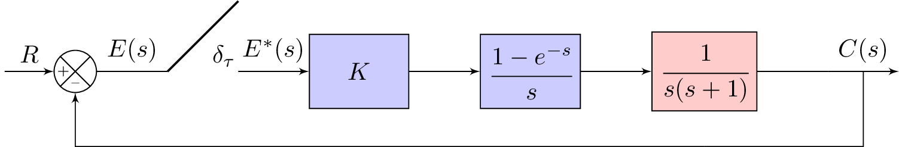

\documentclass[%
% border=1pt
border={-25pt 0pt 0pt 0pt} % left bottom right top
]{standalone}
\usepackage{tikz}
\usepackage{amsmath}
\usetikzlibrary{positioning}
\usetikzlibrary{shapes,arrows,calc}
\usetikzlibrary{decorations.text}
\tikzset{add/.style n args={4}{
minimum width=6mm,
path picture={
\draw[black]
(path picture bounding box.south east) -- (path picture bounding box.north west)
(path picture bounding box.south west) -- (path picture bounding box.north east);
\node at ($(path picture bounding box.south)+(0,0.13)$) {\tiny #1};
\node at ($(path picture bounding box.west)+(0.13,0)$) {\tiny #2};
\node at ($(path picture bounding box.north)+(0,-0.13)$) {\tiny #3};
\node at ($(path picture bounding box.east)+(-0.13,0)$) {\tiny #4};
}
}
}
\begin{document}
%\begin{figure}
%\centering
\tikzstyle{block} = [draw, fill=blue!20, rectangle, minimum height=3em, minimum width=4em]
\tikzstyle{controller} = [draw, fill=red!20, rectangle, minimum height=3em, minimum width=4em]
\tikzstyle{sum} = [draw, fill=blue!20, circle, node distance=1cm]
\tikzstyle{input} = [coordinate]
\tikzstyle{output} = [coordinate]
\tikzstyle{sampleSP} = [coordinate]
\tikzstyle{sampleEP} = [coordinate]
\tikzstyle{otherPoint} = [coordinate]
\begin{tikzpicture}[auto, >=latex']
% Nodes
\node [input] (input) {};
%\node [sum, right = 1cm of input] (sum) {};
\node[draw,circle,add={--}{+}{}{},right of= input](sum){};
\node [sampleSP, right = 1cm of sum] (sumSP) {};
\node [sampleEP, right = 1cm of sumSP] (sumEP) {};
\node [sampleEP, above = 1cm of sumEP] (sumEPTOP) {};
\node [block, right = 1cm of sumEP] (systemK) {$K$};
\node [block, right = 1cm of systemK] (systemZOH) {$\cfrac{1-e^{-s}}{s}$};
\node [controller, right = 1cm of systemZOH] (system) {$\cfrac{1}{s(s+1)}$};
\node [otherPoint,right = 1cm of system] (branchPoint) {};
\node [otherPoint,below = 1 cm of system] (belowsystem) {}; %{$\frac{1}{Ts+1}$};
%\node [block, right = 1cm of system] (system2) {$\frac{1}{Ts+1}$};
\node [output, right = 1cm of branchPoint] (output) {};
\node [input, below = 0.5cm of system] (m) {};
% Arrows
\draw [draw,->] (input) -- node {$R$} (sum);
% Arrows for first sampler
\draw [-] (sum) -- node {$E(s)$} (sumSP);
\draw [-,thick] (sumEPTOP) -- node {$\delta_\tau$} (sumSP);
\draw [->] (sumEP) -- node {$E^\ast(s)$} (systemK);
\draw [->] (systemK) -- node {} (systemZOH);
\draw [->] (systemZOH) -- node {} (system);
%\draw [->] (sumEP) -- node {$M^\ast(s)$} (systemH);
% \draw [->] (system) -- (system2);
\draw [-] (system) -- (branchPoint);
\draw [->] (branchPoint) -- node (y) {$C(s)$}(output);
\draw [-] (y) |- (m) {} ;
\draw [->] (m) -| (sum); %{$-$} node [near end] {} (sum);
\end{tikzpicture}
%\end{figure}
\end{document}